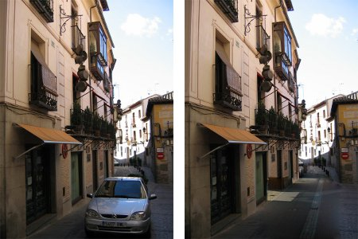
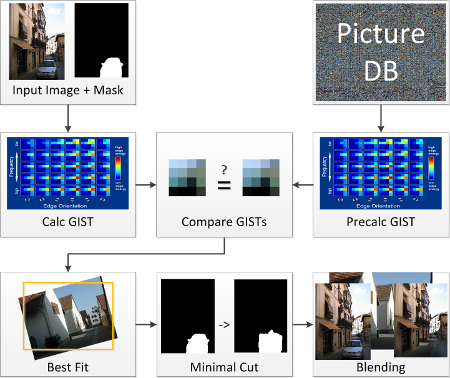

Scene Completion Using Millions of Photographs – An Implementation
Scene Completion Using Millions of Photographs – An Implementation
Introduction

Figure 1: Left: Input, Right: Output by our Implementation
This website presents the results and implementation details of
a method for completing images using millions of photographs
as presented in James Hays' and Alexei Efros' SIGGRAPH 2007
paper
"Scene Completion Using Millions of Photographs". This project
was part of the course Processing Digital Camera Images (winter term 2011/12) at
Technical University Berlin. The implementation
was done by Christian Thurow and Christopher Leiste over the course of one semester.
Our final presentation in class can be found here.
Overview
The main goal is to replace image information in a given query image in the area defined by a mask. Be it for the sake of missing
image information or creating new versions of the input, the masked area is to be covered by another "appropriate"
image. Figure 2 shows the proposed algorithm
from a high level view. In order to find suitable candidates for insertion, we look up similar images in a large
pre-processed image database, but use only descriptors of the images to compare them, rather than the pixel information
themselves. Due to the massive amount of data being processed, pre-calculation of the almost 1.5M images is inevitable.

Figure 2: High Level Overview of Algorithm
Once a good match for the input image has been found, the paper suggests that the best fit is being calculated. This is done by
altering the scale, rotation and translation of the similar image and comparing it with the input image at the mask's position.
After that the image is aligned properly we can then use a graph cut algorithm to improve
the mask in a way that it falls into areas for which the gradients of the two images to be combined are as similar as possible.
This will later result in a smooth transition when blending the images. Once the improved mask is available, the input image
is merged with the candidate using Poisson blending.
For a more detailed description please refer to the Implementation section.
Figure 1 shows one of the results we produced, for more results please refer to the Results page.